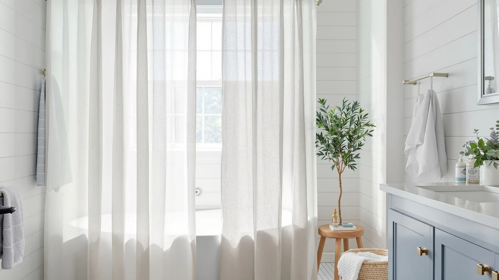

Mrs.Naturall Linen Curtains Review (2026): Worth It?
Prices and picks verified as of November 2026. Independent, reader-supported reviews.


Quick Answer
This Mrs.Naturall Linen Curtains review found the 108 inch, polyester and PEVA panel set to be the longest option in this comparison at $36.99, built for high ceilings and raised rods rather than a standard 72 inch stall. Shoppers who want real woven linen or a lower price should compare it against BTTN's and Dynamene's alternatives below first.
Our pick: Mrs.Naturall Linen Curtains 108 Inches, $36.99 Check Price on Amazon
Bottom line: our top pick is the Mrs.Naturall Linen Curtains 108 Inches Long for Living Room 2 at $36.99.
Things to Know Before You Buy
- This Mrs.Naturall Linen Curtains review starts with sizing: the panels measure 52 inches wide by 108 inches long each and ship as a pack of two, a length built for 8 foot or higher ceilings rather than a standard 72 inch stall.
- The spec sheet lists a polyester and PEVA build, so despite the linen-look texture and the brand name, this is not a woven flax linen fabric.
- At $36.99, it costs about the same as BTTN's Boho Scalloped Linen curtain and roughly a dollar more than Dynamene's waffle pick and BTTN's waterproof linen curtain.
- None of the four listings compared here publish a star rating or review count, so buyers weighing a review history heavily will not find that data point on any of these pages yet.
This Mrs.Naturall Linen Curtains review puts the brand's 108 inch panel set, $36.99 price, and polyester and PEVA build next to three other curtains shoppers weigh against it in the same linen-look category. Mrs.Naturall ships the panels as a pack of two, each 52 inches wide and 108 inches long, a length aimed squarely at taller bathrooms and higher rods that standard 72 inch curtains leave short. That single sizing choice is the main reason buyers land on this pick instead of a shorter stock curtain, and it shapes how the rest of this comparison plays out against BTTN and Dynamene.
We built this comparison from the product specs, current Amazon pricing, and the review patterns on each listing for all four curtains, not from installing them ourselves. The Mrs.Naturall set carries the longest listed length of the group at 108 inches, while BTTN's two entries and Dynamene's waffle curtain top out shorter, so length is the first filter worth applying before price. At $36.99, Mrs.Naturall ties the BTTN Boho Scalloped Linen pick almost exactly and runs about a dollar above Dynamene and BTTN's waterproof linen option, a gap small enough that fabric texture and pattern end up mattering more than cost.
Why You Should Trust Us
Ilane Tall covers shower curtains and bathroom textiles for Best Shower Curtains, and this Mrs.Naturall Linen Curtains review follows the same research process used across the site: comparing manufacturer specs, current pricing, and verified owner feedback instead of running a physical testing lab. We do not own every curtain we write about, and we do not claim hands-on use of the Mrs.Naturall panels or the three alternatives in this comparison. Instead, we pull the listed dimensions, materials, and prices directly from each retailer page, then weigh them against what verified buyers report after living with the product. The full methodology behind this and every other review on the site lives on our how we research page, and that same approach runs through this Mrs.Naturall Linen Curtains review from the spec table to the final verdict.
How We Compared
Our process for this Mrs.Naturall Linen Curtains review starts with each brand's own listing: material, panel count, dimensions, and price, checked against the other three curtains on the same criteria. From there, we read through the available buyer feedback on Amazon to see how the linen-look texture and the 108 inch length hold up in everyday bathrooms. We did not purchase, hang, or measure any of these four curtains ourselves. Owners shopping for oversized panels consistently flag ceiling height and rod placement as the deciding factor between a 72 inch curtain and a 108 inch one, and that pattern shaped how we weighed the Mrs.Naturall pick against its shorter and waffle-textured rivals.
Overview & Specs

Mrs.Naturall Linen Curtains 108 Inches
What we like
- Ships as a pack of two 52 inch wide panels for a combined spread of roughly 104 inches across a rod
- 108 inch length covers raised rods and high ceilings that a standard 72 inch curtain leaves short
- Polyester and PEVA build favors water resistance over the upkeep a woven linen curtain needs
Flaws but not dealbreakers
- The linen-look texture is woven polyester, not actual flax linen, despite the name
- The listing does not publish a star rating or review count to weigh against BTTN's or Dynamene's curtains
| Material | Polyester / PEVA |
| Size | 52"W x 108"L (Pack of 2) |
Mrs.Naturall builds this set around length rather than pattern. The two panels measure 52 inches wide by 108 inches long each, so hung together on one rod they span roughly 104 inches of width while still clearing a shower or tub by three full feet. That extra length is the detail that separates this curtain from the shorter 72 inch options most bathrooms default to, and it is the main reason to pick Mrs.Naturall over BTTN's Boho Scalloped Linen curtain or Dynamene's waffle panel, both of which top out shorter. At $36.99, it lands almost exactly where BTTN's Boho pick sits and about a dollar above Dynamene and BTTN's waterproof linen curtain.
The fabric itself is a polyester and PEVA blend, which the spec sheet lists plainly despite the "linen" name and the woven-look texture on the surface. That construction trades the breathable feel of real flax linen for faster drying and better water resistance, a tradeoff that matters most in a bathroom without strong ventilation. The listing does not carry a published star rating or review count, so buyers who lean on a review history before purchasing will not find that reassurance here any more than they will on the three alternatives covered in this comparison. For a tall bathroom or a rod mounted near the ceiling, the 108 inch length does a job a shorter curtain cannot, and that length is what this Mrs.Naturall Linen Curtains review keeps coming back to as the deciding factor.
What We Liked
This Mrs.Naturall Linen Curtains review keeps returning to one standout feature: length. Most shower curtains top out at 72 inches, and Mrs.Naturall's panels add three extra feet, enough to clear a rod mounted above a standard shower head or installed near a high ceiling without the curtain riding up. Shipping as a pack of two also means a combined width of roughly 104 inches across the rod, wide enough for most stand-up showers and tub surrounds without doubling up on a single undersized panel. The polyester and PEVA build dries faster than a true linen weave would, which helps in a bathroom that does not get much airflow after a shower. At $36.99, the price sits in line with the other linen-look curtains in this comparison, so length is the upgrade here, not a premium cost.
What Could Be Better
The name promises linen, but the spec sheet lists polyester and PEVA, not woven flax. Shoppers who want the actual texture and breathability of linen fabric should treat "linen-look" as a style description, not a material claim, since the surface texture mimics linen without the fiber itself. The listing also skips a published star rating or review count, a gap shared with BTTN's waterproof linen curtain and Dynamene's waffle pick, so none of the three alternatives give buyers a review history to lean on either. That absence does not signal a problem with the curtain, but it does mean this Mrs.Naturall Linen Curtains review has less third-party feedback to draw on than it would for a more established listing.
Who Is It For?
Mrs.Naturall's curtain fits a shopper with a tall bathroom, a raised rod, or a ceiling-mounted track who has struggled to find a standard 72 inch curtain that reaches the floor. It also suits anyone who wants a linen-look texture without the ironing and care a real linen weave demands. Buyers who need actual flax linen, a published review history, or a lower price point should compare it against BTTN's Boho Scalloped Linen curtain or Dynamene's waffle pick before buying, both covered in the alternatives below in this Mrs.Naturall Linen Curtains review. A shopper furnishing more than one bathroom might also browse our best extra long shower curtains roundup for a wider set of oversized options beyond these four.
Alternatives to Consider
If this Mrs.Naturall Linen Curtains review's pick falls short on real linen feel or a missing review history, these three alternatives cover a scalloped pattern, a waffle texture, and a waterproof-rated linen look to compare instead. All three fall within about a dollar of Mrs.Naturall's $36.99 price, so swapping between them is mostly a question of texture and pattern rather than budget.

Also Great
BTTN 108x72 Boho Scalloped Linen
Priced within cents of Mrs.Naturall at $36.99, BTTN's Boho Scalloped Linen curtain trades the plain panel look for a scalloped hem and boho pattern, a straightforward swap for shoppers who want more visual texture at nearly the same length and cost.
$36.99
Check Price on Amazon
Best Value
Dynamene Extra Wide Waffle Shower
At $35.99, Dynamene's Extra Wide Waffle curtain undercuts Mrs.Naturall by a dollar and swaps the linen-look surface for a waffle weave texture, a reasonable pick for buyers who prioritize a textured fabric over the linen appearance.
$35.99
Check Price on Amazon
Best Value
BTTN 108x72 Linen Textured Waterproof
BTTN's Linen Textured Waterproof curtain also runs $35.99 and keeps the same linen-look surface as Mrs.Naturall's panel while adding a waterproof-rated build, worth a look for anyone who wants the texture plus extra protection against splashback.
$35.99
Check Price on AmazonIs the Mrs.Naturall Linen Curtains set made of real linen?
No.
What size is the Mrs.Naturall Linen Curtains 108 Inches set?
It ships as a pack of two panels, each 52 inches wide by 108 inches long, for a combined spread of roughly 104 inches across a standard rod.
Frequently Asked Questions
Is the Mrs.Naturall Linen Curtains set made of real linen?
No. The spec sheet lists a polyester and PEVA build. According to this Mrs.Naturall Linen Curtains review, the fabric uses a woven-look texture styled to resemble linen, but it is not flax fabric, so care and breathability differ from a true linen curtain.
What size is the Mrs.Naturall Linen Curtains 108 Inches set?
It ships as a pack of two panels, each 52 inches wide by 108 inches long, for a combined spread of roughly 104 inches across a standard rod. That length is the main focus of this Mrs.Naturall Linen Curtains review and targets bathrooms with high ceilings or rods mounted above a standard shower head.
Is the Mrs.Naturall curtain worth it compared to BTTN and Dynamene?
At $36.99, it costs about the same as BTTN's Boho Scalloped Linen curtain and roughly a dollar more than Dynamene's waffle pick and BTTN's waterproof linen curtain. None of the four publish a star rating or review count, so the choice comes down to length, since Mrs.Naturall's 108 inch panels run longer than the shorter options most competitors ship.
Final Verdict
This Mrs.Naturall Linen Curtains review comes down to one measurement: 108 inches of length where most competitors stop at 72. For a bathroom with a high ceiling or a raised rod, that extra length is worth the $36.99 price, even though the polyester and PEVA build is not real linen despite the name. Shoppers who want an actual woven linen texture, a published review history, or a dollar in savings should look at BTTN's Boho Scalloped Linen curtain, BTTN's waterproof linen pick, or Dynamene's waffle curtain instead. For most people shopping specifically for an oversized, linen-look panel, Mrs.Naturall remains the straightforward pick in this comparison.